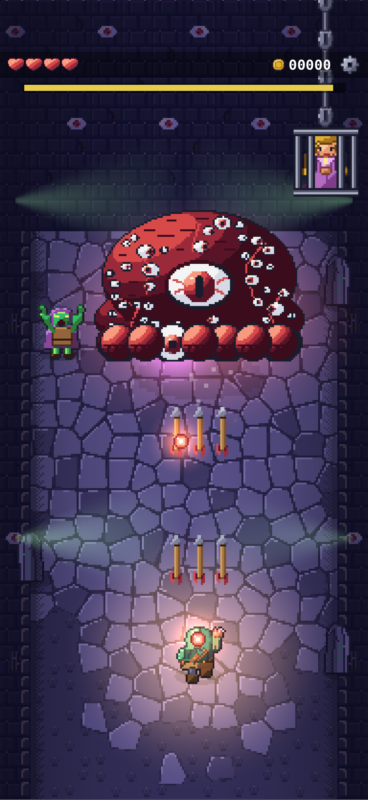
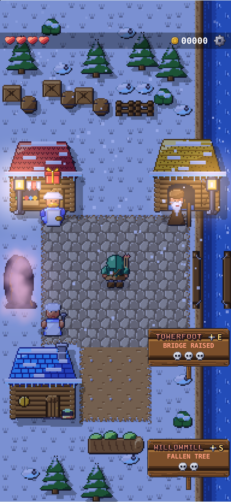
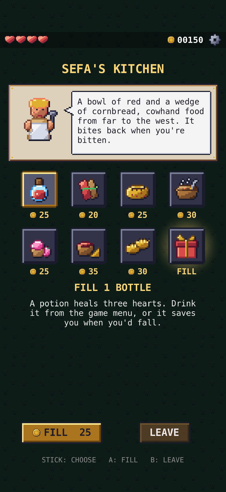
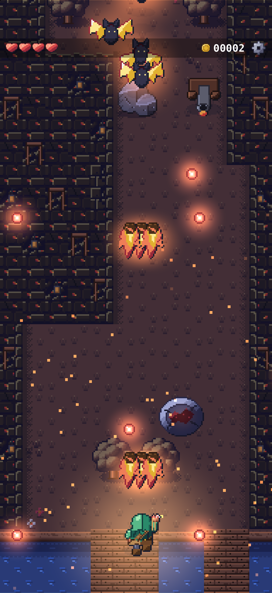
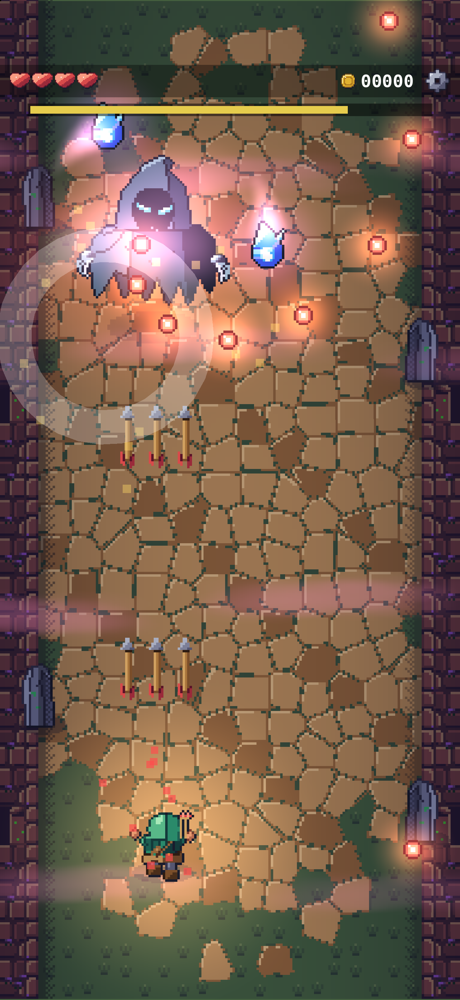
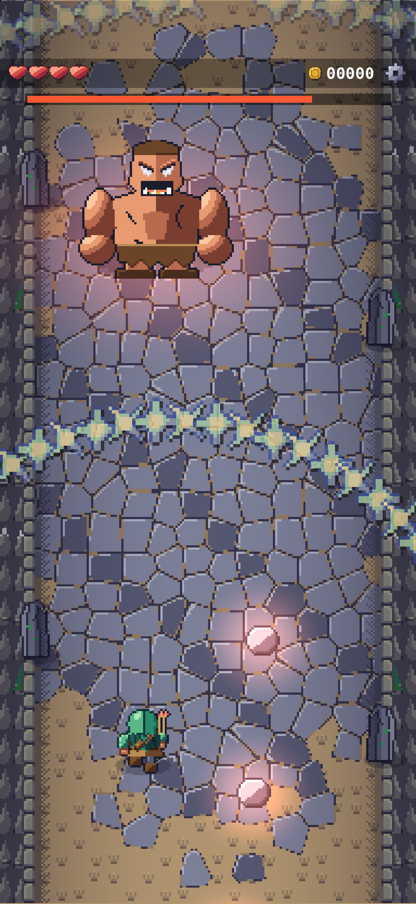
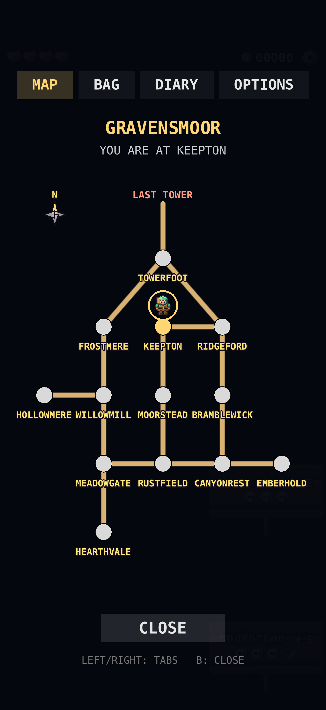
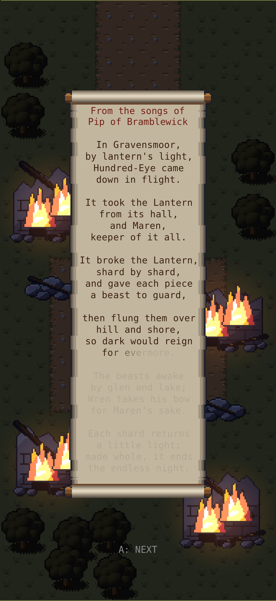

Press kit
Gravensmoor: Pixel Shooter
By Maple Drift Studios
Download the whole kit (zip, 56 MB)
The icon, eight screenshots, the gameplay clip and the fact sheet. Or take them one at a time: fact sheet · icon, 1024 x 1024

The game
A vertical-scrolling shooter told as a folk tale: Wren, a young ranger, crosses an open valley of roads and villages to win back the Great Lantern from Hundred-Eye. Pip, a bard, sings it in rhyme over a chiptune score.
- Fifteen guardians
- Six weapons
- A dozen villages
- Roads walked both ways
- Hidden roads and villages
Facts
| Developer | Maple Drift Studios, an independent one-person studio in Canada |
|---|---|
| Platforms | On the App Store for iPhone, iPad and Apple silicon Macs |
| Controls | Touch, keyboard and game controllers |
| Game Center | 30 achievements, rush leaderboards |
| Price | Free to start: free up to the Mist Wraith, a third of the valley. Pip's Patron, one purchase ($4.99), continues the tale and removes the ads. Ads only play when a player asks for a keeper's gift, and the game never asks to track. |
| Languages | Twelve: English, Portuguese (Brazil), Spanish, German, French, Italian, Japanese, Korean, Chinese (Simplified and Traditional), Turkish and Ukrainian |
| Release | Out since Oct 30 2026 in Canada, Australia and New Zealand. From Nov 16 2026 also in the US, the UK, Japan, South Korea, Taiwan, Hong Kong, Macao, Turkey, Ukraine, Brazil, the Spanish-speaking countries of Latin America and Switzerland. The EU and mainland China are not part of this launch. |
| App Store | apps.apple.com/app/id6818686335 |
Gameplay clip
26 seconds with the game's own sound. The zip holds the full-quality file, 886 x 1920.
Screenshots
iPhone, 1320 x 2868. Open one for the full size.















